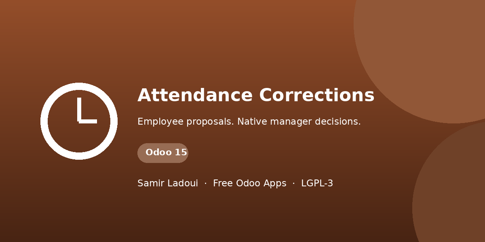

Let internal employees request a correction to their own attendance, or add a genuinely missing shift. Keep the original evidence and the proposed times together while a native attendance approver makes the decision.
Select an existing attendance or request a missing shift. Supply both times and a reason. Submission freezes the proposal; cancel it and create a fresh request if anything changes.
Native attendance Officers and Administrators can approve or reject requests within their permitted companies. Rejection requires a reason. Nobody can decide their own request.
Original times are captured at submission. Requester, decision actor, timestamp and reason are protected in the ORM, not just by readonly form fields. Approved, rejected and cancelled requests stay locked.
Approval uses the approver's existing attendance rights. Native constraints and ordinary attendance computations apply. Stale requests and overlapping periods are refused rather than silently overwriting evidence.
Odoo 15 only in this release. Standard Attendances is the only direct dependency. No paid dependency, portal, scheduled job, hardware connection, SMS, automatic email or payroll workflow is added. Both proposed times are required.
Odoo records, not device logs. This app does not rewrite biometric terminal logs or claim full biometric reimport integration. A later import can still alter native attendance records. No pyzk installation is required.
Chatter notes show submitted originals, requested values and the actual applied attendance. Rejected and cancelled requests explicitly record that their decision did not change attendance.
Copyright © 2026 Samir Ladoui. GNU LGPL version 3 or later (LGPL-3).
Independent community addon; Odoo is a trademark of Odoo S.A.